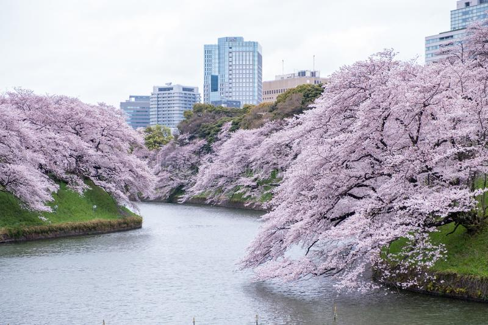

Les jardins de Tokyo
Nous avons le jardin impérial de Shinjuku qui est un parc dans les arrondissements de Shinjuku et de Shibuya à Tokyo. Les cerisiers en fleur font partie de l’art Japonais et constituent un spectacle que vous ne devez pas manquer lorsque vous vous rendez à Tokyo.

La vision sublime du paysage vous le trouverez à Chidorigafuchi au palais impérial de Tokyo. Assez central dans la capitale, Koishikawa se situe au nord des jardins impériaux, juste attenant au Tokyo Dome. Pendant la balade, on emprunte des petits sentiers autour de l’étang principal et on recommande de le visiter vers fin novembre ainsi qu’en février.
Les observatoires
Avec un concept fondé sur celui de la tour Eiffel, la tour de Tokyo est une tour rouge et blanche située dans l’arrondissement de Minato. Elle mésure 332,6 mètres de haut ce qui en fait l’une des haute tour en métal du monde.

Vous ne pouvez pas manquer le Tokyo Skytree si vous visiter la capitale japonaise. C’est tout simplement la plus haute tour du monde. Il est vrai qu’elle a été construite pour diffuser des signaux radio et assurer la télédiffusion, néanmoins elle a été associée à un grand centre commerciale connu sous le nom de tokyo Skytree Town. Ce complexe comprend plusieurs magasin et un grand aquarium.

Randonnées
Nous avons en premier lieu le mont Takao qui est une montagne rattachée à la commune de Hachioji dans la préfecture de Tokyo. Cette randonnée consiste à faire l’ascension jusqu’à son sommet. On parle de randonnée mais pour la plupart des touristes, il s’agit d’une balade tranquille d’une heure et demi sur un sentier bétonné.

Situé tout près de Tokyo dans le parc national de chichibu Tamakai, le mont Mitake est une montagne culminant à 929 mètre d’altitude. Il s’agit aussi d’une nalade tranquille tout en visitant le sanctuaire Shinto appelé Musashi Mitakejinja.

Les adresses uniques
Vous vous dites peut-être qu’une gare de chemin e fer est tout simplement l’endroit où vous prenez le train ? Mais la gare central de Tokyo est tot simplement exceptionnelle et mérite que vous le visitiez lors de votre sejour à Tokyo. L’édifice a récemment bénéficié d’une restauration complète et est à present ouvert au public non seulement pour ses services de transport mais également en tant que galerie d’art, et pour ses délicieux restaurants. Des grattes ciels ont aussi vu le jour et de nouveau magasins ont ouverts.

Aussi, nous avons Tokyo Disney Resort. Il est composé de deux parc distincts dont: Tokyo Disneyland et Tokyo Disneysea. Les parcs de Tokyo sont donc des versions évidement japonisées avec, il va sans dire des personnel pli et un entretien impeccable.